Die Registerkarte Abstände (Details Zeichnung)
PD-Dialog-Spacing-Tab
Welche Bedienelemente auf der Registerkarte Abstände verfügbar sind, hängt vom aktuellen Diagrammtyp ab. Der folgende Referenzabschnitt fasst mögliche Bedienelemente dieser Registerkarte zusammen.
Säulen/Balken:
| 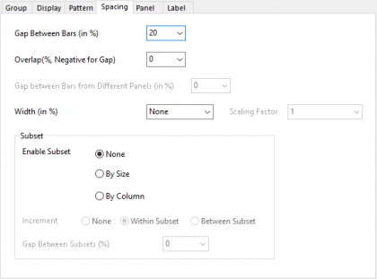 |
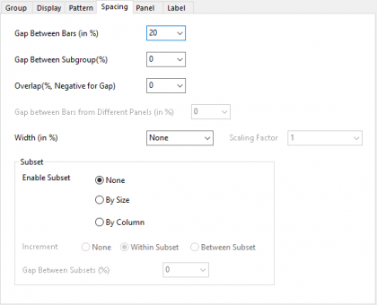 |
| 2D-Säulen/Balkendiagramm |
2D-Säulen/Balkendiagramm mit Untergruppierung |
Histogramm und Box
| 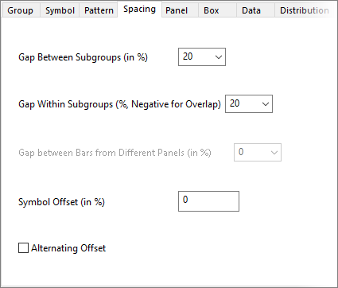 |
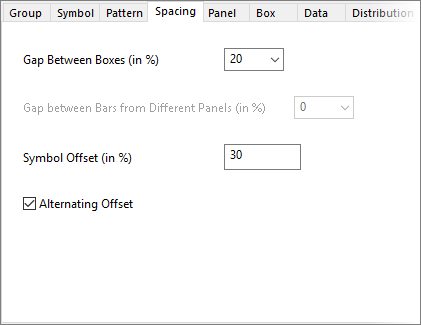 |
| Box/Histogramm mit Teilgruppierung |
Box/Histogramm ohne Teilgruppierung |
Ring, Windrose und Stiff
| 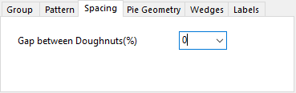 |
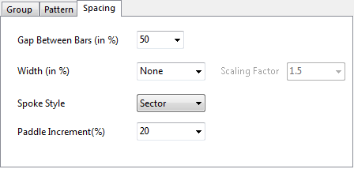 |
| Ringdiagramm |
Windrosendiagramm |
| 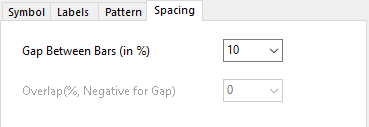 |
|
| Stiff-Diagramm oder Karte mit Balken |
|
Abstand zwischen Balken/Boxen/Ringen (in %)
Der Wert dieses Auswahlfeldes kontrolliert den Abstand zwischen Säulen, Balken und Boxen für jeden X-Wert oder Ringen und zwar in Einheiten von % der Breite der Säulen, Balken oder Boxen bei jedem X-Wert oder Ring. Das Bedienelement kann über eine Tastatureingabe oder Auswahl in einer Auswahlliste ausgeführt werden.
Der Standardwert ist 20. Der mögliche Wertebereich reicht von 0 bis 100. Bitte beachten Sie, dass diese Option die Werte von -100 bis 100 für ein Ringdiagramm akzeptiert. Wenn der Eingabewert keine ganze Zahl ist, wird sie auf die nächste ganze Zahl aufgerundet. Hinweis:
- Bei einem Stiff-Diagramm steuert der Abstand innerhalb von Balken (in%) den Abstand zwischen den Polygonen.
- Bei einer Karte mit Balken steuert der Abstand innerhalb von Balken (in%) den Abstand zwischen Balken für alle Balkendiagramme.
Abstand zwischen/innerhalb von Untergruppen
Wenn die Untergruppierung für ein Diagramm eingeschaltet ist, können Sie den Abstand zwischen Untergruppen bearbeiten. Wenn es sich um ein Boxdiagramm oder Histogramm handelt, ist auch das Bedienelement Abstand innerhalb Untergruppen (%, negativ für Überschneidung) verfügbar, um den Abstand anzupassen.
- 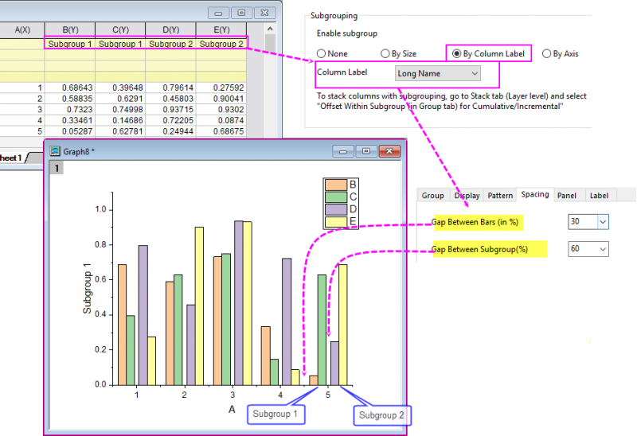
- Wenn der Abstand zwischen Untergruppen 0 ist, besteht kein Abstamd zwischen "Untergruppe 1" und "Untergruppe 2".
- Wenn der Abstand zwischen Untergruppen 100 ist, ist der Abstand zwischen den Untergruppen gleich dem Abstand zwischen den Balken. Das heißt, dass der Abstand zwischen den Untergruppen nicht größer ist als der Abstand zwischen den Balken.
- Wenn der Abstand zwischen Balken ein negativer Wert ist, wird der Abstand zwischen Untergruppen deaktiviert.
- 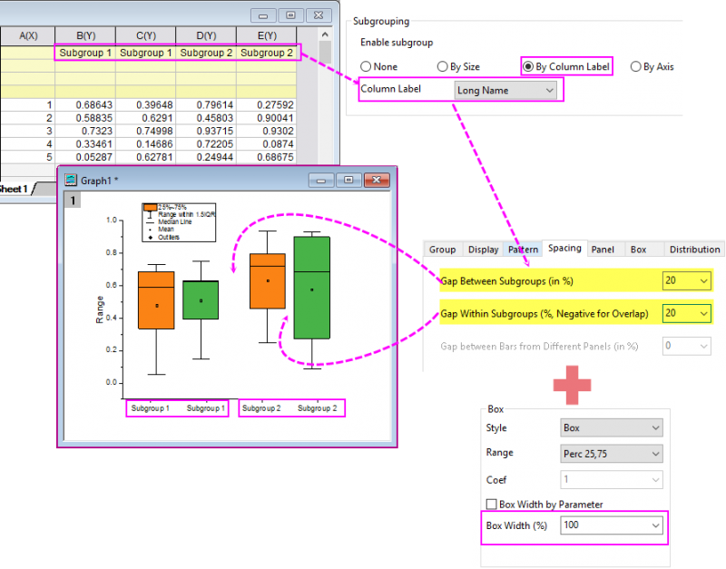
- Wenn der Abstand zwischen Untergruppen 0 ist, können der Abstand innerhalb von Untergruppen (%, negativ für Überschneidung) und die Boxbreite verwendet werden, um den Abstand zwischen jeweils nebeneinander liegenden Boxen anzupassen.
- Wenn der Abstand zwischen Untergruppen 100 ist, liegt die Boxbreite bei 0 und die Boxen in der gleichen Untergruppe überschneiden sich. Wenn der Abstand innerhalb von Untergruppen (%, negativ für Überschneidung) 100 ist, dann ist die Boxbreite gleich 0.
- Der Abstand innerhalb von Untergruppen (%, negativ für Überschneidung) akzeptiert negative Werte, wodurch sich die Säulen/Balken/Boxen in derselben Untergruppe überschneiden.
Überschneiden (%, negativ für Abstand)
Dieses Kombinationsfeld ist in den folgenden zwei Fällen verfügbar:
Wählen oder geben Sie in dieses Auswahlfeld einen Wert ein. Der Wert ist der Prozentanteil der Säule bzw. des Balkens, der sich bei einem gegebenen X-Wert überschneidet. Der Prozentwert ist das relative Verhältnis zwischen dem Abstand/der Überschneidung und der Säulen-/Balkenbreite. Ein negativer Wert bedeutet Abstand zwischen Säulen/Balken. Wenn der Wert 0 ist, besteht kein Abstand bzw. keine Überschneidung.
Der Standardwert ist 0. Der akzeptable Bereich reicht von -100 bis 100.
Abstand zwischen Balken aus verschiedenen Feldern (in %)
Bei einem vorhandenen Diagramm mit mehreren Feldern, wie einem Trellis-Diagramm, können Sie die Felder sich überschneiden lassen (das bedeutet, das mehrere Felder zu einem einzelnen Feld kombiniert werden), indem Sie das Kontrollkästchen Sich überschneidende Felder auf der Registerkarte Feld aktivieren.
Wenn Sie dies mit einem Trellis-Diagramm mit Säulen/Balken tun, können Sie das Bearbeitungsfeld Abstand zwischen Balken aus verschiedenen Feldern auf der Registerkarte Abstände verwenden, um den Abstand zwischen den Balken aus unterschiedlichen Feldern hinzuzufügen und zu vermeiden, dass sie sich überschneiden.
Breite (in %)
Legen Sie einen Datensatz fest, um die Säulen-/Balkenbreite zu steuern.
Wählen Sie eine Spalte (Datensatz) in der Auswahlliste. Datensatzwerte bestimmen die relative Säulen-/Balkenbreite in Kombination mit den Einstellungen für Abstand zwischen und Überschneidung. Werte werden mit dem Skalierungsfaktor multipliziert (siehe unten).
Akzeptable Werte müssen größer als oder gleich 0 sein. Wenn Breite (in %) gleich 0 ist, wird die Säule/der Balken als vertikale/horizontale Linie angezeigt.
Skalierungsfaktor
Verwenden Sie dieses Kombinationsfeld, um den Skalierungsfaktor für Werte in Breite (in %) zu definieren.
Geben Sie einen Skalierungsfaktor an, indem Sie ihn über die Tastatur eingeben oder in der Auswahlliste auswählen. Der Wert kann jede positive rationale Zahl oder 0 sein.
Wenn der Faktor gleich 0 ist, bestimmen die Werte in Breite (in %) die Balkenbreite hinsichtlich der Skalierungswerte der X-Achse.
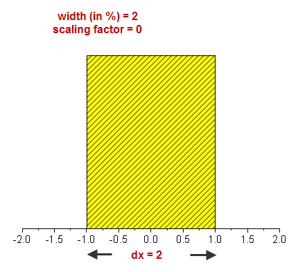
Teildatensatz
Legen Sie fest, ob die Diagramme in Teildatensätze geteilt werden, und, falls ja, ob dies Nach Größe oder Nach Spalte (der kategorialen Werte) geschehen soll.
Die Gruppe Teildatensatz ist nicht für alle gruppierten Diagramme verfügbar. Diese Bedienelemente sind zum Beispiel für gruppierte Säulen- oder Punktdiagramme verfügbar, aber nicht für Trellis-Diagramme, bei denen die Gruppierung auf der Registerkarte Feld gesteuert wird.
Die Gruppe Teildatensatz ist unter diesen Bedingungen verfügbar:
- Die Zeichnung besitzt automatisch zugewiesene X-Daten (die Datenzeichnung wird als <autoX, Y> im Dialog Details Zeichnung bezeichnet). Es gibt einige Situationen, in denen X-Werte automatisch zugewiesen werden, aber in diesem Kontext (z. B. ein gruppiertes Säulen- oder Punktdiagramm) werden eine oder mehr Gruppenspalte(n) verwendet, um die Skalierung der X-Achse zu erzeugen.
- 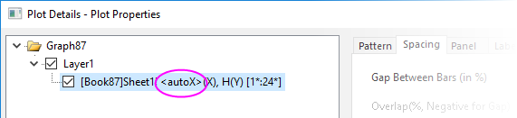
- ... und Feld aktivieren ausgeschaltet ist (auf der Registerkarte Feld ist die Option Kein für beide Richtungen gewählt).
- 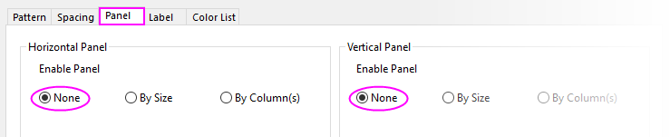
... ODER
- Die Zeichnung ist ein Liniendiagramm der Shapefile-Daten, bei dem die Füllfläche unter Kurve aktiviert ist und Formen nach Ausrichtung füllen (oder Formen nach umgekehrter Ausrichtung füllen) ausgewählt ist.
... ODER
- Die Zeichnung hat beliebige X-Daten, aber der Typ der Hilfsstrichsbeschriftung der X-Achse wird mit Text aus Datensatz festgelegt, wobei der zur Definition der Hilfsstrichsbeschriftung verwendete Datensatz die X-Daten sind.
| Teildatensatz aktivieren |
-
Kein: Die Säulen werden NICHT in Teildatensätze unterteilt. Beachten Sie, dass in diesem beispielhaften Säulendiagramm die Säulen äquidistant verteilt sind.
-
Nach Größe: Teilen Sie die Säulen in Teildatensätze, indem Sie die Größe der Teilsätze festlegen (im Allgemeinen nützlich für balancierte gruppierte Zeichnungen). Wenn die Teildatensatzgröße mit 0 festgelegt ist, wird kein Teildatensatz verwendet. Im folgenden Beispiel ist die Teildatensatzgröße = 4 und Sie können sehen, dass eine größere Lücke zwischen den Gruppen aus je vier Säulen besteht.
- 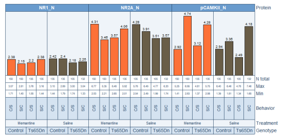
-
Nach Spalte: Die Spalten werden nach kategorialen Werten in einer Arbeitsblattspalte in Teildatensätze unterteilt (besonders nützlich für unbalancierte gruppierte Zeichnungen). Legen Sie Ihre Arbeitsblattspalte mittels der Auswahlliste fest. Beachten Sie in den folgenden Beispielen den Effekt der Teildatensätze auf die Spaltengruppierung (die Hauptgitternetzlinien sind aktiviert, um eine die Aussagekraft zu verstärken).
_Spacing_Tab/Subset_column_example1.png) - 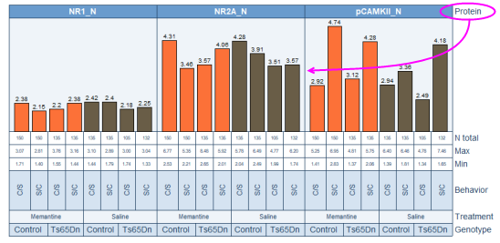
|
| Abstand zwischen Teildatensätzen (%) |
Wenn die Größe des Teildatensatzes nicht gleich 0 ist, können Sie den Abstand zwischen Teildatensätzen (%) festlegen, entweder durch Auswahl einer Anzahl aus der Auswahlliste oder die direkte Eingabe eines Werts. Dies ist eine Prozentangabe der Breite der Säulen/Balken. |
|
Hinweis: Wenn Teildatensätze aktiviert sind, sind die Tabellen für Hilfsstrichsbeschriftungen, wie die oben in den gruppierten Säulendiagrammen gezeigten, mit einer Kombination der Bedienelemente für Teildatensatz und der Einstellung Beschriftungen zusammenfügen auf der Registerkarte Beschriftung der Hilfsstriche, Unterregisterkarte Tabelle im Dialog der X-Achse, strukturiert.
Im folgenden Beispiel wurde der Teildatensatz auf Nach Spalte = Genotype gesetzt. Sie können die Wirkung der Einstellung Beschriftungen zusammenfügen auf die Hilfsstrichsbeschriftungen der Zeilen von Treatment sehen.
- 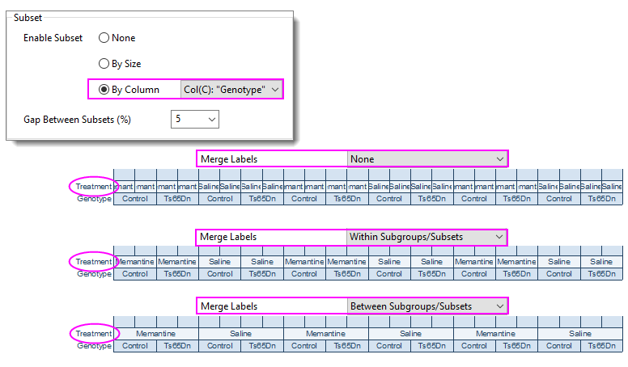
Weitere Informationen zum Festlegen von Hilfsstrichsbeschriftungen finden Sie unter Registerkarte Beschriftung der Hilfsstriche im Dialog Achsen.
|
Symbolversatz (in %)
Bei Boxdiagrammen haben Sie die Option, die Verteilung der einzelnen Datenpunkte für jede Box anzuzeigen. Verwenden Sie dieses Bedienelement, um die vorhandene Punktanordnung in positiver Richtung (nach rechts) oder in negativer Richtung (nach links) in Relation zur Box zu verschieben.
Informationen zur Anzeige und Anordnung der Datenpunkte in Ihrem Boxdiagramm finden Sie in der Dokumentation der Registerkarten Boxdiagramm und Daten des Dialogs Details Zeichnung.
Abwechselnder Versatz
Aktivieren Sie dieses Kontrollkästchen, um die vorhandene Punktanordnung entsprechend dem Symbolversatz zu verschieben, und zwar abwechselnd (links, rechts, links, rechts etc.) von der Mitte jedes Diagramms aus.
Speichenstil
Diese Option ist nur für Windrosendiagramme verfügbar. Sie können den Stil der Speichen angeben.
- Sektor wird als Speichenstil festgelegt.
- Diese Option verwendet die Anfangsbreite des ersten Sektors als die Breite des ersten Blocks.
- Hinweis: Wenn es keinen Ruhekreis gibt, werden alle Paddles als Linie angezeigt.
Paddle-Inkrement (%)
Diese Option ist nur für Windrosendiagramme verfügbar. Und diese Option ist verfügbar, wenn Paddle als Speichenstil ausgewählt ist.
Sie können die Breite der nächsten/vorherigen Zeichnung definieren. Der Standardwert des Paddle-Inkrements beträgt 20 %. Das bedeutet, dass die Breite von jeder Zeichnung 1,2 der vorherigen ist.